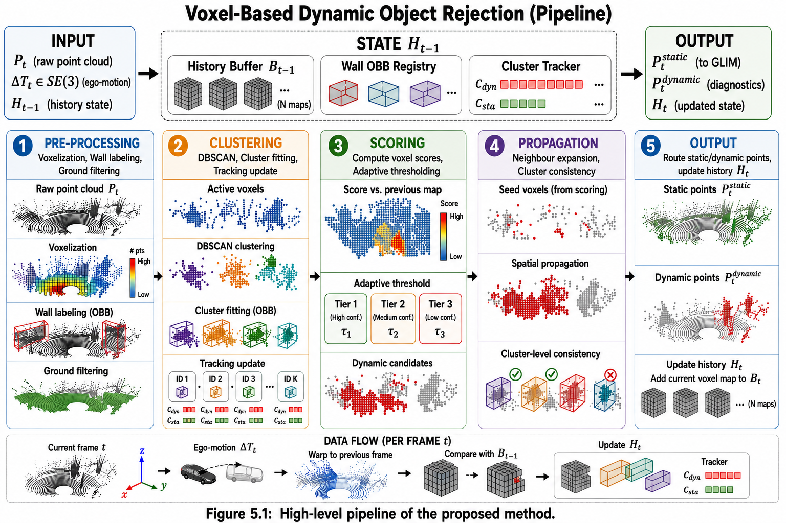

Module 1 — Voxel-based pipeline
Autonomous — needs no external detector.
Every incoming scan passes through five sequential stages inside AsyncDynamicObjectRejection::run(). The novelty is stage 5's closed feedback loop: cluster-level tracking (stage 3) progressively lowers the per-voxel threshold for regions with a persistent dynamic history (stage 4), which lets slow-moving objects — below any single-frame geometric threshold — accumulate enough evidence across frames to be caught.

1 · Voxelization — DynamicVoxelMapCPU
DynamicVoxelMapCPU (dynamic_voxelmap_cpu.hpp) extends gtsam_points' GaussianVoxelMap and IncrementalVoxelMap with a richer per-voxel payload, DynamicGaussianVoxel:
| Field | Purpose |
|---|---|
is_wall / is_ground / is_outlier / is_dynamic |
Classification flags set by later stages |
voxel_points, voxel_intensities, voxel_times |
Raw points retained for splitting the frame after classification |
dynamic_score |
Running score written by stage 4 and read by stage 5 |
Resolution is a single knob, voxel_resolution in config_wall_filter.json (default 0.25 m) — every downstream DBSCAN eps and neighbor search derives from it, so it's the one parameter that reshapes the whole pipeline's spatial granularity.
2 · Static pre-filtering — WallFilter
WallFilter::filter() voxelizes the frame once (no second pass downstream) and runs iterative RANSAC over voxel centroids, up to max_planes planes, classifying each fitted plane by its normal angle:
- Wall — normal within
wall_vertical_angle_degof horizontal. - Floor/ceiling — normal within
floor_ceiling_angle_degof vertical.
For each wall plane it extracts the largest spatially-contiguous inlier cluster, builds an oriented bounding box (rejecting non-compact shapes via wall_bbox_max_aspect_ratio), and merges it into a WallBBoxRegistry that persists across frames — new observations are matched to existing boxes by 3D OBB IoU (Separating Axis Theorem) and SLERP-blended in, or added as a new wall if the overlap is below overlap_threshold. Registry entries not re-observed for max_missed_frames frames expire.
Ground is handled separately when floor_polar_enabled is true: a polar-grid segmentation (range bins of floor_polar_r_bin, angular bins of floor_polar_theta_deg) picks the floor_polar_k_lowest lowest points per cell between floor_polar_seed_min_r/_seed_max_r, checks local flatness and slope, then a constrained RANSAC (ransac_floor_plane) refits a single horizontal plane over the accepted seeds. Voxels beyond every wall's half-space, or beyond a radial fallback (max_detection_radius), are flagged is_outlier.
Wall and ground voxels are unconditionally kept static — they never enter stage 4's scoring loop, which is what keeps FIDO cheap: only the minority of voxels that are neither structure nor obvious outliers get scored.
| Key parameters | config_wall_filter.json |
config_wall_registry.json |
|---|---|---|
| RANSAC | ransac_inlier_threshold 0.07 m · ransac_confidence 0.99 · ransac_max_iterations 100 · ransac_min_inliers 30 |
— |
| Ground | floor_polar_flatness_threshold 0.05 · floor_polar_max_ground_height 0.3 m · floor_polar_max_vertical_spread 0.30 m |
— |
| Registry merge | — | overlap_threshold 0.3 · merge_weight 0.3 · min_normal_dot 0.9 |
| Registry expiry | — | enable_expiry true · max_missed_frames 5 · max_duplicate_center_distance 2.0 m |
3 · Cluster extraction & tracking — DynamicClusterExtractor
Runs on the wall/ground-filtered voxelmap, in order:
- DBSCAN over active voxel centroids (
cluster_voxels) —eps = eps_voxel_factor × voxel_resolution,min_ptscore-point threshold, bounded byknn_max_neighbors. - Bounding boxes per cluster (
compute_bounding_boxes), discarding clusters undermin_cluster_voxelsormin_points_for_bbox, and boxes outside thebbox_min/max_extentandbbox_min/max_volumewindows. - NMS at
cluster_iou_threshold, then peer merge (merge_nearby_clusters) — iteratively fuses boxes withinpeer_merge_distance, converging on merge chains. The distance is picked byenv_typeinconfig_ros.json:peer_merge_distance_indooror_outdoor. - Tracking (
update_tracks) — associates boxes to existingTracks by center distance (track_match_distance) and IoU (track_match_iou); unmatched tracks survive up totrack_max_missedframes; matched tracks get an EMA-smoothed velocity.
Each Track carries a small state machine that is FIDO's actual hysteresis mechanism:
| Field | Role |
|---|---|
dynamic_frames / static_frames |
Consecutive-frame counters updated by update_dynamic_feedback() from stage 4's output |
PermanentState::NONE → DYNAMIC → STATIC |
Locked once dynamic_frames ≥ permanent_dynamic_frames or static_frames ≥ permanent_static_frames (0 disables locking). A locked track's boxes stop being re-evaluated by stage 5. |
bbox_history |
Last track_bbox_history_size boxes, re-expressed in the current sensor frame each call — feeds get_dynamic_track_history() |
A box is considered "confirmed dynamic" once PermanentState::DYNAMIC or dynamic_frames ≥ min_dynamic_frames — with the shipped config, just 2 consecutive confirmed-dynamic frames before stage 4 starts treating the whole cluster as reliable evidence (Tier 1, below).
| Parameter | Value | Parameter | Value |
|---|---|---|---|
eps_voxel_factor |
1.5 | track_match_distance |
2.0 m |
min_cluster_voxels |
3 | track_match_iou |
0.05 |
cluster_iou_threshold |
0.1 | track_max_missed |
5 frames |
peer_merge_distance_indoor |
0.01 m | min_dynamic_frames |
2 |
peer_merge_distance_outdoor |
2.8 m | permanent_dynamic_frames |
8 |
bbox_min_extent / _max_extent |
0.1 m / 4.0 m | permanent_static_frames |
20 |
4 · Dynamic scoring — DynamicObjectRejectionCPU
score_voxels() compares the current voxelmap against the previous frame's, accumulating a per-voxel dynamic_score:
score = w_shift * max(0, centroid_shift − min_shift_m)
+ w_mahalanobis * mahalanobis_distance // 0 by default
+ w_cluster * (+1 inside dynamic cluster, −0.5 inside static/none)
+ w_velocity * (cluster_ema_speed − velocity_static_threshold)
− w_history * static_ratio_over(frame_num_memory)
+ w_history_dynamic* dynamic_frames_in_history
− w_distance * ‖voxel_position‖ // suppresses far-range noise
Ego-motion feeds a motion-scale factor: motion_scale_ combines motion_threshold_scale × ‖Δtranslation‖ and rotation_threshold_scale × ‖Δrotation‖ from PoseKalmanFilter's delta pose (see Architecture), widening the threshold while the platform moves fast so ego-motion residual doesn't get flagged as a moving object.
The score is compared against an effective threshold, not the raw dynamic_score_threshold — base_threshold = dynamic_score_threshold × motion_scale_ is then multiplied by one of three tier factors depending on how much corroborating evidence the voxel has:
| Tier | Condition | Factor (shipped) | Effect |
|---|---|---|---|
| Tier 1 | Voxel inside a confirmed dynamic cluster bbox | tier1_threshold_factor = 0.55 |
Lowest bar — cluster-level tracking already vouches for this region |
| Tier 2 | Dynamic last frame, no cluster bbox this frame | memory_threshold_factor = 0.70 |
Short-memory carry-over for a track that briefly lost cluster support |
| Tier 3 | No cluster, no dynamic history | unconstrained_threshold_factor = 3.0 |
Highest bar — isolated evidence must be strong to avoid false positives |
Why the tiers matter
Tier 1's factor must stay above w_cluster / dynamic_score_threshold — otherwise every voxel inside any tracked cluster would be flagged unconditionally regardless of its own shift, defeating the per-voxel check entirely (noted directly in DynamicObjectRejectionParamsCPU's doc comment).
5 · Label propagation
Two passes tighten the classification before points are split, then feedback closes the loop:
propagate_to_neighbors()— addsw_neighborto the score of each of the 26 voxel-grid neighbors of a confirmed-dynamic voxel and re-applies the threshold, so a moving object's silhouette doesn't get eroded to its highest-shift voxels only.propagate_to_clusters()— if the dynamic-voxel ratio inside a cluster bbox crossescluster_propagation_threshold(itself scaled by motion viacluster_motion_scale/cluster_rotation_scale), the whole cluster is marked dynamic. For voxels outside every current bbox, a separate check againsthistorical_bboxes— past frames' boxes of already-confirmed tracks, viacontains()/contains_inflated()— catches object parts a slightly-stale detection missed.update_dynamic_feedback()(back inDynamicClusterExtractor) — increments each track'sdynamic_frameswhen its bbox was confirmed dynamic this frame, resets to 0 otherwise. This is what makes stage 3's hysteresis and stage 4's Tier 1 bar mutually reinforcing frame over frame.
Finally, collect_points() walks every voxel and appends its raw points to the static or dynamic bucket, and build_frame() reassembles a PreprocessedFrame for each — recomputing k-NN neighbor indices when the source frame requested them.